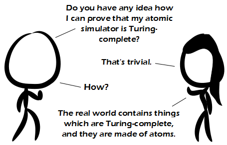

Comic JK 852
When I Feel Like It
⇤
<
?
>
⇥

⇤
<
?
>
⇥
Forum
.
RSS
.
Digg
.
Facebook
.
Reddit
.
Twitter
.
Stumbleupon
Enter your thoughts on number 852 here. Please, no spamming, trolling, or unifying everything. If you had a computer powerful enough to simulate all the atoms on earth, how accurately could you predict the future? (bit.ly/hBckZd) > Depends how accurate your initial snapshot was, and whether you believe quantum states would collapse differently each time they're simulated. >> And I really think you'd need to simulate all the atoms in the universe. >>>How do you account for stupidity? Not even Hari Seldon could do that. >>>You'd need all the atoms in the universe for 100% accuracy (pending previously mentioned issues). You could probably achieve reasonable accuracy with one simulating only earth. >>>>Even if you could perfectly simulate a large closed system the Earth isn't closed. Astronomers and NASA scientists would be influenced by things outside the model and the errors would grow in the style of the chaos butterfly. >>>>>What about fields? >>>>>>That would be accounted for by the atoms >A computer cannot simulate the Earth AND itself. Even if the universe were deterministic and you knew the position of all the atoms etc. etc. you could only simulate closed systems, and one that has a computer that simulates its future isn't. >>As a solution, roll out a tired quote: "that's no moon" Also, there are lots of things that are smaller than atoms, such as the things atoms are made of, and we don't even know if some of those exist yet, or how they behave in most situations, so with what others have already said, the errors would increase most likely with an exponential rate. And that's not even counting how difficult it would be to take a snapshot of all the atoms on Earth. > If we can accurately describe the behaviour of atoms without knowing the smaller things, who cares. >> That seems to be the point. +1 >>> But it's the small things that matter. >>>> Also, we can't accurately describe the behavior of ACTUAL atoms. The more you know about the atom's starting position, the less you know about about its velocity. Heisenberg uncertainty principle! And unfortunately you need to know both for a simulation. Your mother is made of atoms. > But, is she Turing complete? >> Nope, she's still turing around Europe. >>> Are you sure she's not stuck in Amsterdam? Yay! I just finished my archive binge, time to add this to my webcomic bookmarks and look forward to rereading all comics but this time with the alt-text in the near future. > Your life is now over as you know it, and your boogaloo just got a lot more popular.